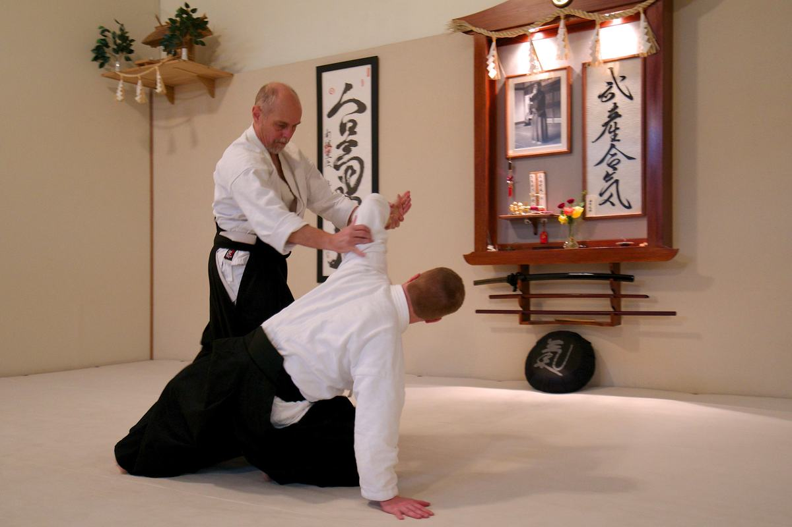
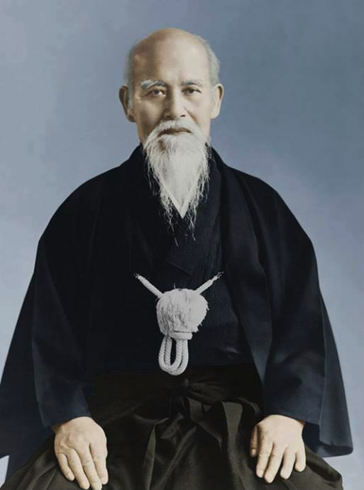

Aikido & our dojo
The art of peace
Where aikido comes from, what it gives you, and how our dojo connects back to its founder.

What is aikido?
Aikido is a non-competitive Japanese martial art founded by Morihei Ueshiba in the early 20th century. Instead of meeting force with force, you blend with an attack and redirect it, using circular movement, balance and timing.
Most practice is with a partner, taking turns as attacker and defender. We also train with the wooden sword (bokken) and staff (jo) to understand the techniques more deeply.
Aikido isn't about beating an opponent. It's about overcoming our own limits, fears and weaknesses.
What training gives you
Aikido is functional training for everyday life, and many students find it becomes a lifelong study.
Body
- Balance, flexibility and coordination
- Stamina and conditioning
- Safe falling that protects you off the mat too
Mind
- Focus and concentration
- Staying calm under stress
- Ways to relax body and mind
Life
- Practical ways to keep yourself from harm
- Calmer responses to everyday conflict
- A supportive community
The founder
Morihei Ueshiba, O'Sensei
O'Sensei (“Great Teacher”, 1883–1969) was an extraordinary martial artist with a reputation for being almost unbeatable. Yet he felt that winning at someone else's expense wasn't really winning.
His search to reconcile martial skill with his spiritual life led him to create aikido: a martial art based not on destruction, but on the loving protection of all life.
“There are no contests in the Art of Peace. A true warrior is invincible because he or she contests with nothing.”Morihei Ueshiba

Our lineage
We're a member of Aikido Schools of Ueshiba (ASU), more than 100 dojos affiliated with the Aikikai Hombu Dojo in Tokyo.
- 1955O'SenseiMitsugi Saotome becomes a live-in disciple (uchi deshi) of the founder, until 1969.
- 1975Saotome ShihanLeaves Tokyo for the U.S. and founds ASU to carry on O'Sensei's teaching.
- 1989Alvarez ShihanOpens our dojo. Later named Shihan by Saotome Shihan and a member of his Ueshiba Juku.

The story of our name
In 1990, Alvarez Sensei met Reverend Yukiyasu Yamamoto, 97th High Priest of Tsubaki Grand Shrine in Suzuka, Japan, at Tsubaki America Shrine in Stockton. Sensei helped at the shrine's ceremonies for over 10 years and became close friends with its priests.
When he mentioned he'd love a Japanese name for the dojo, Reverend Tsumura passed the wish along. About a year later, Reverend Yamamoto presented the name Shinrei.
Shin means kami, or spirit. Rei means little bell, and can also be read “suzu”, for Suzuka. Together they say our dojo is connected to, and protected by, the kami of Suzuka: Sarutahiko-no-O-Kami, whom O'Sensei regarded as the guardian spirit of aikido. O'Sensei visited Tsubaki Grand Shrine many times and practiced waterfall purification (misogi) there.
For members
Tips for your training
A few ideas we share with every new member.
Relax
Beginners try hard; masters try easy. Let your breathing, face and shoulders soften, and your technique will follow.
Go slowly
Only move as fast as you can while staying relaxed. Speed comes naturally with careful repetition.
Keep breathing
Never hold your breath. Always exhale as you meet the mat when you roll or fall.
Be a good partner
As uke, give an honest attack that fits your partner's size and experience. Bring out their best.
Watch closely
Much of aikido is taught without words. Watch the demonstration carefully, then try it.
Train steadily
Keep coming through the ups and downs. Even 10–15 minutes a day adds up.
Ready to try it?
Your first class is free. Then it's $80 for 2 months of unlimited training.